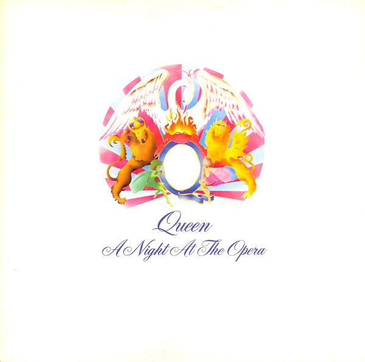
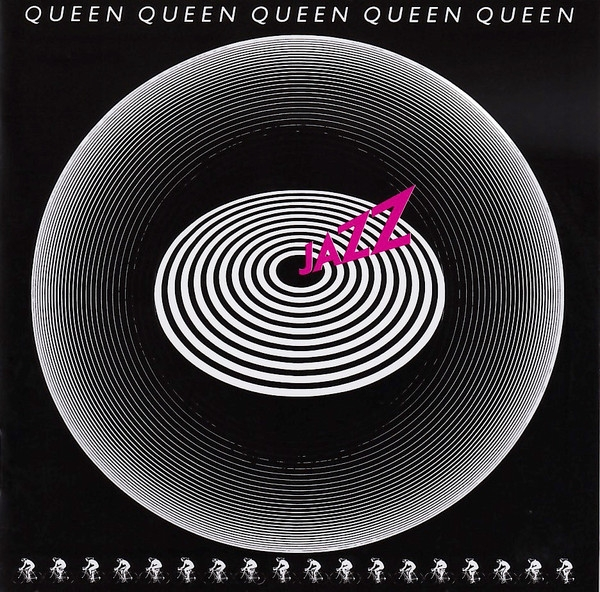
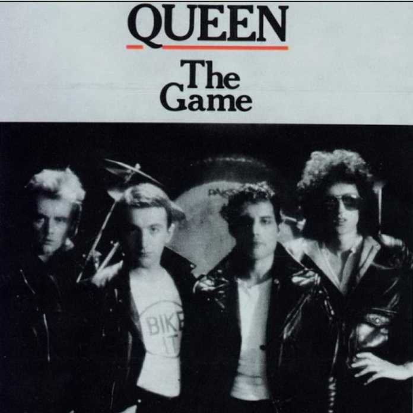
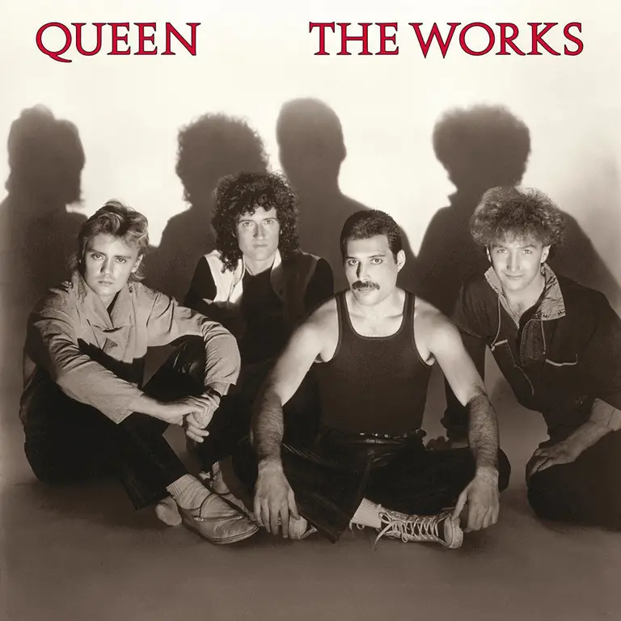
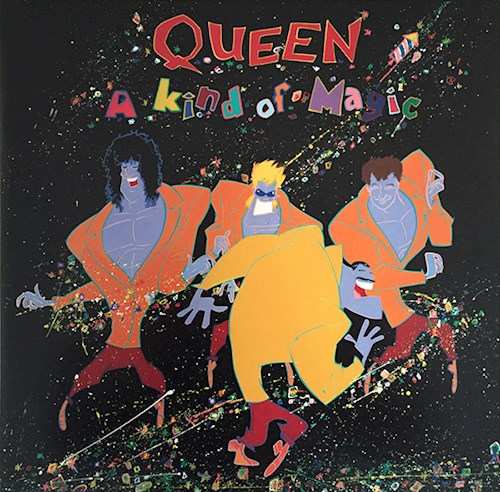
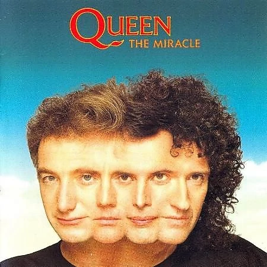
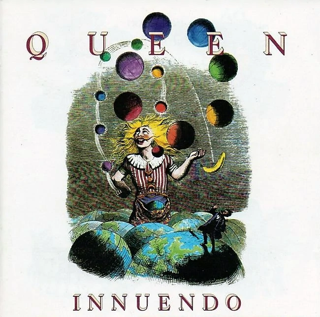

Discografía Completa
Queen (1973)
Fue un debut dificil ya que las compañias lo rechazaban. El álbum se grabó a lo largo del 1971 y 1972. Los temas claves fueron: “Keep Yourself Alive”, “Jesus”
Queen II (1974)
Fue el primer éxito de la banda británica. Brian May y Roger Taylor cantan en temas propios y los lados del disco son llamados Lado Blanco y Lado Negro. Temas claves: “Some day one day”, “White Queen (as it began)”, “The march of the Black Queen”
Sheer Heart Attack (1974)

Fue el primer disco de la banda en llegar a los charts estadounidenses y la clave para ser conocida de forma internacional. Las guitarras pierden preponderancia, mientras continúa el desarrollo melódico y armónico de las canciones. Temas claves: “Killer Queen”, Now Im here”
A night at the Opera (1975)
En este disco, la banda empieza a utilizar instrumentos no tradicionales, como el arpa. Aqui nace su mayor éxito "Bohemian Rapsody" El disco reparte composiciones e interpretaciones entre los integrantes de la banda. Temas claves: “You re my best friend”, “39″, “Love of my life”, “Bohemian rhapsody”
A day at the races (1976)

En este disco podemos encontrar otro de los grandes éxitos de la banda "Somebody to love". En este disco May iguala a Freddie en cantidad de canciones y el rock a nivel mundial llega a su pico mas alto. Temas claves: “Tie your mother down”, “Sombody to love"
News of the world (1977)

Éste es el disco mas rocker de Queen en toda su discografia. La banda sigue dividiéndose para la composición y Brian May usa efectos sonoros en la psicodélica “Get down, make love”. Temas claves: “We will rock you”, “We are the champions”, “Spread your wings”
Jazz (1978)
Fue un disco con nuevas busquedas sonoras, se inclinaron por lo pop. En este disco podemos escuchar una de sus mejores canciones como lo es Dont stop me now. Queen se halla en la cima de popularidad, tanto en Inglaterra como en EE.UU. Temas claves: “Fat bottomed girls”, “Bicycle race”, “Dont stop me now”
The game (1980)
Luego de un año sin publicar un disco, el pop gana terreno en un grupo historicamente Hard. El disco se posiciona en primer lugar en ventas en EEUU y es aqui donde Freddy se deja su famoso bigote. Temas claves: “Crazy Little Thing Called Love”, “Another one bits the dust”, “Save me”
Hot Space (1982)

Luego de una gira mundial, Queen saca este disco el cual es puramente Pop, el publico lo rechaza, sobre todo el publico estadounidense y la banda recibe fuertes criticas. Asi y todo no podemos negar que Under pressure cancion clave de este disco, es una de las mas escuchadas. Temas claves: “Under pressure”
The Works (1984)
Tras el fracaso de "The Works, la banda tenia que dar una buena impresion, pero los 80 fue una decada dificil. Quisieron volver al rock pero increiblemente los temas mas escuchados de este disco fueron los pop, como por ejemplo "I want to Break Free". Temas claves: “Radio Ga Ga”, “I want to break free”, “Its a hard life”
A kind of magic (1986)
El mundo era otro en esta epoca y las personas ya aceptaban la variedad de estilos de la banda, este es uno de los discos mas queridos por los fans. Temas claves: “One vision”, “Friends will be friends” “Who wants to live forever”
The Miracle (1989)
La gira "A kind of magic" seria la ultima que daria Queen con Freddy Mercury, el grupo daba falsas explicaciones a este motivo el cual era muy triste y desgarrador para el, su familia, su banda y el mundo. Este disco fue una buena continuacion para "A kind of magic" con el sonido y la vibra que la banda habia logrado imponer. Temas claves: “I want it all”, “The miracle”, “The invisible man”
Innuendo (1991)
Innuendo fue la obra maestra publicada en un momento que nadie esperaba, es una joya artistica que apareció en el momento menos deseado, el momento que Freddy muere, este disco nos muestra el gran compositor que fue Freddy incluso meses antes de su muerte. Y de aqui el tributo de esta pagina: Show Must Go on.
Made in Heaven(1995)
Tres años despues de la muerte de Freddy, los integrantes deciden sacar este disco con cintas que el habia dejado. El resultado fue un disco mas adulto, relajado con bellas canciones sin rock ni ruidos ni pop. El disco fue un exito.